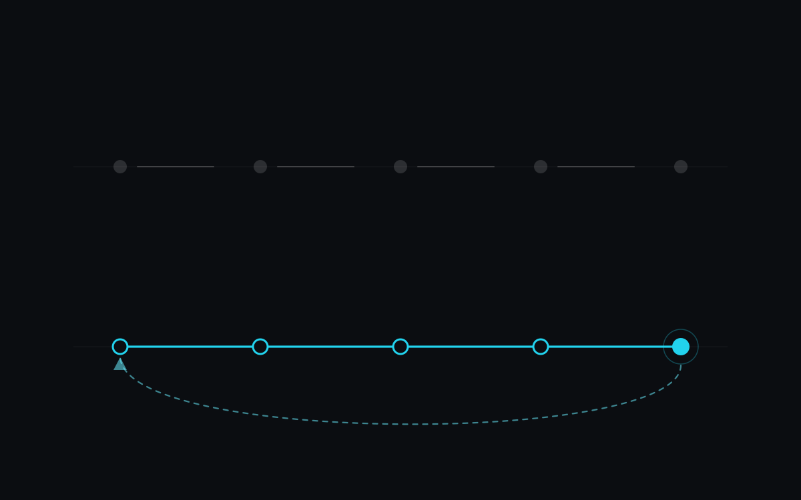

In a large company, a feature passes through five pairs of hands before it reaches a user. In a small company it usually passes through one. That person's most valuable skill is not writing code — it is carrying a problem all the way from "what does this person actually need" to "it is still working six months later".
I have worked at both ends of that spectrum. At Mercado Livre I was one of eight engineers on a simulation platform used by around five thousand supply-chain specialists, with product, data and platform teams around us. At Capellaris, an agentic platform built for small and medium businesses, I was the only engineer: my business partner owned the commercial and financial side, and everything technical — from the first conversation with a pilot customer to post-sales support — was mine. Both are legitimate ways to build software. They need different people.
Five jobs, usually five job titles
Delivering something end to end means doing five distinct jobs. In a large organisation each one has its own title.
- Understanding the need. What the user is trying to get done, as opposed to what they asked for.
- Technical requirements. Volumes, budget, data, integrations, and what happens when it fails.
- Architecture. The shape of the system, chosen for the team that will run it.
- Implementation. The code.
- Maintenance. Operating it, fixing it, and changing it as the business moves.
Every handoff between those jobs loses a little context. A large company pays for that loss with headcount, documents and meetings, and it can afford to. A small company cannot. It has no product manager to translate the customer, no SRE to absorb the operational cost of a clever design, and often no second engineer to question the first one's assumptions. Every handoff it does have becomes a place where the original intent quietly leaks out.
| Stage | Large company | Small company |
|---|---|---|
| Understanding the need | Product, UX research | Whoever talks to the customer |
| Technical requirements | Architects, tech leads | Nobody, unless the engineer asks |
| Architecture | Review board, platform team | The engineer, bounded by the budget |
| Implementation | Several engineers, code review | One or two engineers |
| Maintenance | SRE, on-call rotation, support | The same engineer, indefinitely |
Start with the need, not the request
Users describe solutions. That is not a failing — it is the only vocabulary most people have for a problem. The engineer's job is to work backwards from the request to the thing it is standing in for.
At Buscaônibus, a travel meta-search platform, five small bus companies had no digital integration at all. An integration in the usual sense was impossible: there was nothing on their side to connect to, and no one there to build it. What the business actually needed was for their routes to appear in search like everyone else's. Framed that way, the answer was on-demand scrapers running on Cloud Run, plus a monitoring dashboard that surfaced when a company stopped returning data.
The Capellaris pilots were smaller still: an independent consultancy, a restaurant and an art atelier. For one pilot customer, the deliverable that mattered was a unified view of financial planning across departments, replacing fragmented manual processes. The agents were the means. Had I started from "what can agents do" instead of "where does this business lose track of its plan", I would have built a demo.
This stage pays off at any scale. On the Mercado Livre simulators, splitting one large input spreadsheet into smaller sequential steps cut input errors by 17%. No model, no new service — just a closer look at how people were actually filling it in.
Requirements are where small projects quietly fail
In a small company, technical requirements are rarely written down, because writing them is nobody's job. They exist anyway, and they come due later. These are the questions I ask before designing anything:
- Who uses it, and how often? Ten people once a week and ten thousand people an hour are different systems.
- What happens if it is down for an hour? For a day? The honest answer is often "not much", and that answer is worth a lot of money.
- What data does it touch, and who owns it? Especially once an LLM sits in the path.
- What does it cost per month at today's volume, and at ten times that?
- Who fixes it at two in the morning? In a small company, this is the requirement that should shape every other one.
Architecture sized to the team, not the diagram
For a small company, an architecture decision is mostly an operations decision in disguise. Every service, queue and datastore is something somebody has to understand, upgrade, secure and pay for. The best design is rarely the most elegant one on a whiteboard.
Capellaris is not a small system: multi-tenant, with a full RAG pipeline, hybrid search and hierarchical multi-agent orchestration. It still runs on managed pieces — Cloud Run and Firebase on GCP, Supabase PostgreSQL with pgvector, Cloudflare in front. Vectors live in the same Postgres as the rest of the data rather than in a separate vector database, and the models sit behind one interface so no single vendor owns the product. None of those choices wins a benchmark on its own. Together they let one engineer operate the whole thing.
The right architecture for a small company is the one its smallest realistic team can still operate at two in the morning.
Implementation is the part everyone already sees
Writing the code is the stage people picture when they hear "engineer", and the one that has changed most. I use AI coding tools every day and they have made implementation genuinely cheaper. As I argued in AI is an accelerator, not a decision-maker, that does not make the surrounding decisions cheaper — it makes them a larger share of the job. When code was slow to write, fuzzy requirements had time to surface before much was built on them. Now you can build the wrong thing in an afternoon.
Maintenance is where you find out whether you understood
Launch is the midpoint, not the finish line. Most of what I know about building systems I learned in the months after they shipped.
At Stormtech I wrote about half of a fleet of RPA bots that scraped bank portals to update loan status across 18 integrated banks, and maintained all of them — which meant updating a bot every time a bank changed its portal. Maintaining your own code alongside other people's teaches you quickly which assumptions were fragile. It is also why I built a dashboard of bot health — running, failed, unused — that cut the time to spot a broken pipeline from about two hours to under one.
At Buscaônibus I was the sole technical owner of a backend handling millions of daily searches: on-call, incident response, the whole production lifecycle. When you know you are the one who gets paged, you build differently. You put feature flags with immediate rollback in place before you need them — the approach behind the platform migration I described in Planning a legacy migration. You give each data source its own cache TTL and build a tool to inspect the keys, because you will be the one inspecting them.
Ask whoever built a system how they would find out it was broken. If the answer is "a user would tell us", it was built by someone who did not expect to maintain it.
The loop is the point
The value of one person owning all five stages is not that they do five jobs. It is that the last stage feeds the first. The person who hears the complaint can change the requirement, the architecture or the code without a ticket crossing three teams first.
On Capellaris, every project delivered by the manager agent received a one-to-five star rating from the user. I tracked it from the first single-agent deliveries through to hierarchical multi-agent runs, and later projects scored higher and needed fewer refinement rounds. That curve came from a short loop: the person reading the ratings was the same person deciding what to build next.
Where end to end goes wrong
This is not an argument for heroics. One person owning everything has real failure modes, and ignoring them is how small companies end up hostage to a single engineer.
- Bus factor. Knowledge that lives in one head is a risk, not an asset. Owning something end to end includes writing it down and choosing technology someone else can pick up.
- Uneven depth. Nobody is equally strong at all five stages. Part of the skill is knowing which one is your weakest and when to bring in a specialist.
- Bottleneck. Past a certain size, a single owner slows the company down. The goal then is to hand stages off deliberately, with their context, rather than by accident.
- No guarantee of a product. At ReciclaComigo, a five-person startup, I built a reverse vending machine's edge software, its Arduino firmware and its AWS environment. The company closed before public launch. Owning every technical layer does not make a market exist.
If you are hiring for a small company
Do not only ask candidates what they built. Ask what they kept running, what broke, and what they changed because of it. The answers tell you whether someone has done the whole loop or only its visible middle.
And if you are an engineer who wants this skill, there is no shortcut: stay with something after it ships. Be the person who gets the call. It is the least glamorous of the five stages, and it is the one that teaches you the other four.